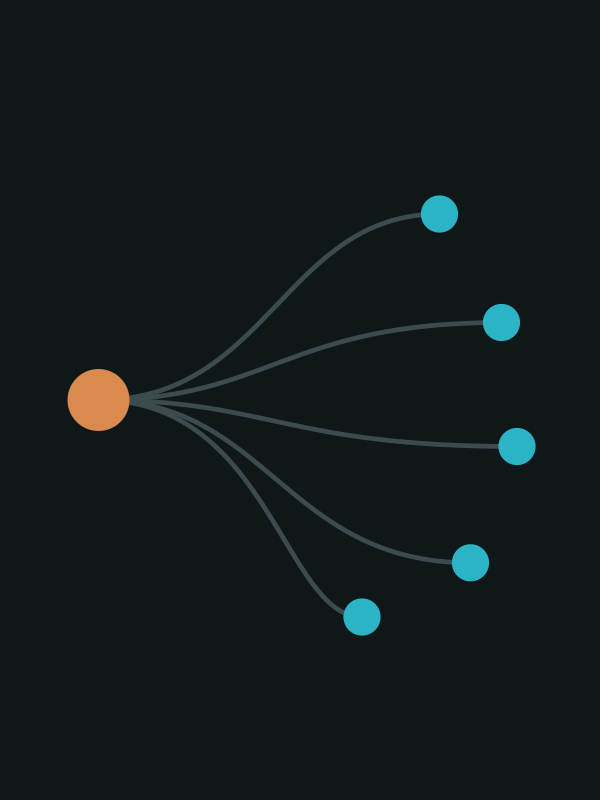

What changes when software starts acting for shoppers: what consumers trust, delegate, buy and feel, across retail, travel, finance and mobility.
Research questionHow does agentic AI change what consumers trust, delegate, buy and feel through 2027?
With research assistance from several AI models (Claude, Gemini) · Views are the author’s own
Cite asChuhee Lee, Agentic AI and the Consumer: 2027 Outlook, October 2026 edition (data as of 11 October 2026), https://blueplanet-ai.github.io/agentic-consumer-2027/, CC BY-NC 4.0.
Fully autonomous purchasing draws 9% in Accenture’s 16-country survey and 11% in Gartner’s US survey, while 74% would let an agent handle specific tasks such as negotiating or resolving complaints.
Source: Accenture [1]; Gartner [2]Adobe measured AI-referred traffic to US retail sites up 693% year on year in holiday 2025. Yet Visa’s December 2025 release counts “hundreds” of controlled agent-initiated transactions.
Source: Adobe [5]; Visa [7]48% of US car buyers want to apply for credit online but 33% do; 40% want to pick F&I products online but 16% do. The first agent use cases are plausibly in these steps: the author’s inference, not yet observed at scale.
Source: Cox Automotive [11]Fact: stated by the cited source. Interpretation: the author’s reading of the cited evidence. Hypothesis: expected from the evidence but not yet observed. Figures inside every takeaway are sourced.
Agentic AI is changing how consumers search, compare and track faster than it is changing who makes the final purchase decision. Across surveys in the US, Europe and Asia and platform disclosures checked to 11 October 2026, consumers are willing to let an agent research, monitor and negotiate for them. Most still keep the final “buy” for themselves.
Willingness to let an agent complete a purchase ranges from 5% to 39% depending on how the question is asked. Fully autonomous purchasing draws 9% in Accenture’s 16-country survey and 11% in Gartner’s US survey, while 74% would let an agent handle specific tasks such as negotiating or resolving complaints.[1][2][3][4]
Adobe measured AI-referred traffic to US retail sites up 693% year on year in holiday 2025, converting 31% better than other traffic, and Amazon says 300 million customers used Rufus in 2025. Yet Visa’s December 2025 release counts “hundreds” of controlled agent-initiated transactions. Influence on shopping is not the same as delegated buying.[5][6][7]
Consumers are more than twice as likely to trust a brand- or retailer-owned agent as an AI-native platform agent, and 75% say paid influence would reduce their trust in an AI shopping agent. In March 2026 a US court enjoined a third-party shopping agent from acting inside Amazon accounts, so access is contested as well as trust.[1][3][8]
Users report less mental fatigue (57% in one vendor survey), but privacy (53%) and accuracy (52%) worries and a verification burden (54% double-check everything) push the other way. The US FTC’s August 2026 draft policy on personalized pricing does not mention AI agents.[9][2][10]
US car buyers want to do more online than they do: 48% want to apply for credit online but 33% do, and 40% want to pick F&I products online but 16% do. The first agent use cases are therefore plausibly in these steps (author’s inference, not yet observed at scale).[11]
Share willing · by degree of autonomy · different surveys
Surveys differ in country, date, sample and wording, so bars from different sources are not like-for-like. The pattern, not the exact gap, is the finding. Sources: Accenture, Quad / Harris Poll, Gartner (see references).
Enterprise adoption is broad but scaled deployment is narrower: 40% of organisations above $1bn in revenue say they are scaling agents, against 22% of smaller ones (McKinsey, 2026).
Enterprise adoption is broad and scaled deployment is narrower. McKinsey’s 2026 survey of 1,719 respondents in 97 countries finds nearly nine in ten using AI regularly, 44% saying AI is scaling across the enterprise, and 37% attributing at least some EBIT impact to it. For agents specifically, 40% of organisations above $1bn in revenue say they are scaling them, up from 27% a year earlier, against 22% of smaller organisations, essentially flat.[12] The infrastructure side of this story, including power and compute constraints, is covered in the mega trends report (Trend 1).[13]
| Claim | Figure | Kind | Source and date |
|---|---|---|---|
| Agents inside enterprise apps | Up to 40% of enterprise applications will include task-specific AI agents by end-2026, from under 5% in 2025. | Forecast | Gartner, 26 Aug 2025[14] |
| Agentic front ends | By 2028, a third of user experiences will shift from native applications to agentic front ends. | Forecast | Gartner, 26 Aug 2025[14] |
| Share of software revenue | Best case: about 30% of enterprise application software revenue by 2035 (above $450bn), against 2% in 2025. Gartner calls this an optimistic scenario, not a base case. | Scenario | Gartner, 26 Aug 2025[14] |
| AI spending | $1.3tn in 2029, growing 31.9% a year from 2025. The figure covers AI IT spending broadly (infrastructure, applications, platforms, services), not agents alone. | Forecast | IDC, 26 Aug 2025[15] |
| Agents at scale | 40% of large and 22% of smaller organisations are scaling agents. | Survey | McKinsey, 25 Aug 2026[12] |
| Payoff | 37% report at least some EBIT impact from AI; about 6% are “high performers” (5%+ of EBIT, significant impact). | Survey | McKinsey, 25 Aug 2026[12] |
Payment networks, AI labs and marketplaces are building the rails for agent-initiated purchases at the same time, with different designs; the table separates what has shipped from what is still rolling out.
Payment networks, AI labs and marketplaces are building the rails for agent-initiated purchases at the same time, with different designs. The table separates what has shipped from what is still rolling out.
| Player | What it did | Status | Evidence quality |
|---|---|---|---|
| OpenAI + Stripe | Agentic Commerce Protocol (open) and Instant Checkout inside ChatGPT, announced September 2025: US, single-item purchases, selected merchants. PayPal adopted the protocol in October 2025; Instacart handles grocery checkout. | Shipped (US, limited) | Secondary report[17] |
| At I/O 2026: Universal Cart across Search, Gemini, YouTube and Gmail; Universal Commerce Protocol with launch merchants including Nike, Sephora, Target, Ulta Beauty, Walmart and Wayfair; Agent Payments Protocol for purchases within user-set spending and brand limits. | Rolling out (US this summer; AP2 “in the coming months”) | Secondary report; no Google primary link given[18] | |
| Visa | Intelligent Commerce and the Trusted Agent Protocol (to separate legitimate agents from bots). Completed “hundreds” of controlled agent-initiated transactions with partners; 100+ partners worldwide. Forecasts that millions of consumers will use agents to complete purchases by the 2026 holiday season. | Pilots (US closed beta; APAC and Europe from early 2026) | Primary (company release)[7] |
| Amazon | Rufus replaced by “Alexa for Shopping” in May 2026. Auto Buy purchases at a target price with a 24-hour free-cancellation window; “Buy for Me” purchases from other retailers’ sites (some retailers say they never opted in). Reports 300 million Rufus customers and nearly $12bn incremental annualized sales in 2025. | Shipped (US) | Company-reported figures via secondary reports[6][19] |
| Alibaba | On 11 May 2026 connected the Qwen app to the Taobao and Tmall catalog (over 4 billion products): browse, compare, order and track by conversation; a 30-day price tracker places an order automatically at the target price. | Shipped (China) | Primary (company release)[20] |
Log scale · different measures
Amazon’s figure is company-reported.[6] Salesforce measures sales AI “influenced” (about one-fifth of global online holiday sales, 1.5 billion shoppers analysed), not sales an agent executed.[21] McKinsey’s figures are early forecasts for goods only, assuming moderate merchant readiness, and the authors call adoption “still unclear”.[22] The bars are not additive.
Year on year · US sites · Adobe Analytics
Traffic means shoppers clicking through from a generative AI tool; it is not agent-completed purchasing. Adobe does not describe how AI traffic was identified. Retail AI visits converted 31% better than other traffic.[5]
The cliff is steepest at the last step: in Accenture’s data 85% are open to collaborating with an agent, but 9% are open to fully autonomous buying.
% willing · four surveys · not directly comparable
Question wording drives the spread. “Open to” (Accenture) and “trust” (Quad / Harris) are looser than “willing to let AI make the decision” (Gartner). Sources: Accenture[1], Quad / Harris Poll[3], Gartner[2], Experian[4].
The cliff is steepest at the last step. In Accenture’s data, 85% are open to collaborating with an agent and 74% would have it handle specific tasks, but 32% would let it choose a purchase and 9% are open to fully autonomous buying. The same shape appears in finance: 54% are comfortable with an agent applying for credit, 23% would let it act when pre-agreed rules are met, and 5% would grant full autonomy.[1][4] Gartner finds that consumers want help with research, price comparison and narrowing choices but keep the final decision, and warns that if shoppers must verify every output they will not see the tool as convenient.[2]
Delegation depends on the type of purchase. Accenture’s breakdown shows recurring services and replenishment as the most delegable and travel as the least autonomous:[1]
| Purchase type | Open to delegated decisions | Open to autonomous purchasing |
|---|---|---|
| Recurring services | 36.1% | 12.5% |
| Routine replenishment | 30.8% | 8.6% |
| Discretionary spending | 30.3% | 8.2% |
| Lifestyle | 30.2% | 8.1% |
| Travel | 29.5% | 7.0% |
Principal alignment. Consumers are more than twice as likely to trust brand- or retailer-owned agents as AI-native platform agents.[1] In a US survey, 75% would trust an AI agent less if brand money swayed its recommendations, and 75% would trust the brand less for paying to influence agents.[3] In finance, 75% would be more comfortable with AI connected to an institution they already trust.[4] Adobe finds 69% feel more confident in brands that disclose from the start that they are dealing with an agent.[9]
Guardrails matter. In RTB House’s four-country survey, 35% want human approval before an AI completes a purchase. In the US, the share who would trust an agent to buy up to $250 with a seven-day return window is 22% for Baby Boomers, 29% for Gen X, 42% for Millennials and 35% for Gen Z; the return window is the trust condition.[23]
Access is contested. On 9 March 2026 a US federal judge granted Amazon a preliminary injunction barring Perplexity’s Comet agent from accessing password-protected parts of Amazon’s site to shop for customers, finding that Comet acts “with the Amazon user’s permission, but without authorization by Amazon”. The ruling is a preliminary, first-instance decision, and I did not confirm whether an appeal was filed.[8] The practical point for 2027 is that a consumer’s permission may not be enough for an agent to act on a retailer’s platform.
Agents could ease or add to a strained consumer’s load; the relief evidence is self-reported and mostly vendor-run, while the escalation evidence centres on privacy, verification and control.
The backdrop is a consumer under strain: 58% report moderate to extreme stress daily and 50% want products and services uniquely tailored to them (Euromonitor global survey; the release gives no methodology).[24] The question is whether agents ease or add to that. The evidence below is organised by direction. Every relief figure is self-reported, and most come from vendor-run surveys.
| Signal | Direction | Evidence | Strength |
|---|---|---|---|
| Mental fatigue | Relief | 57% of those who adopted AI tools for administrative tasks report a significant drop in mental fatigue; users report saving an average of 56 hours a year (Adobe, US, n=1,007).[9] | Self-reported; vendor survey; adopters only |
| Decision fatigue | Relief (expected) | 81% believe AI could reduce decision fatigue; 83% believe agents could help avoid missing details such as hidden fees (Experian, 13 countries).[4] | Belief about the future, not experience |
| Feeling understood | Relief | 64% of active generative AI users say it helps them feel seen, heard and understood (Accenture).[1] | Self-reported; active users only |
| Privacy | Escalation | 53% cite privacy concerns (Adobe); 73% feel uneasy about how AI might use personal shopping data and 54% find giving AI access to shopping history unappealing (Quad / Harris).[9][3] | Consistent across two US surveys |
| Verification burden | Escalation | Among consumers who used AI while shopping, 54% had to double-check all the information and 62% found some of it a waste of time (Gartner, n=846).[2] | Small US sample |
| Control | Escalation | 34% cite lack of control as a barrier (Adobe).[9] In Pew’s June 2025 survey 50% of US adults were more concerned than excited about AI in daily life and 10% more excited; an earlier Pew survey (2024) found that almost half or more of the public say they have little or no control over AI in their lives.[25] | General AI attitudes, not agents specifically |
% of US consumers · Adobe, Sep 2026 · n=1,007
Self-reported perceptions, not measured behavior; margin of error ±3% at 95% confidence. Fieldwork dates not stated.[9]
Gallup’s April 2026 poll finds 31% name the high cost of living or inflation as their family’s most important financial problem (41% at the 2024 peak), and 13% name energy costs, up 10 points from 2025 and the highest since 2008.[26] Agents are positioned as a response: Amazon says Auto Buy shoppers average 20% savings per purchase (company-reported),[6] 84% in Experian’s survey believe AI could help them save money,[4] and 43% in Accenture’s survey rank budget and value as their top priority when instructing an agent.[1]
The same data cuts the other way. Among active generative AI users in Accenture’s survey, 26% have bought a more expensive item because AI boosted their confidence, and the same share have increased their basket size.[1] Higher conversion is also what retailers want from agent traffic (Adobe: AI referrals converted 31% better).[5] A shopping agent can lower the price paid per item and raise total spend at once.
Pricing rules have not caught up with agents. On 19 August 2026 the FTC proposed an enforcement policy statement on personalized pricing, with public comment open to 18 September 2026.[27] It rests on a consumer-expectations theory (shoppers reasonably expect to see the same price as others at the same place and time) and expects clear disclosure when prices are personalized, but it does not prohibit the practice outright.[27] The FTC document itself does not mention algorithms, AI or AI agents.[10] New York and New Jersey have passed laws aimed at personalized pricing.[27] Whether a buyer-side agent can counter seller-side price personalization is, so far, an open question with no data.
Retail, travel and financial services are at different stages, but in each, discovery and planning run ahead of unsupervised purchase.
LeanFurthest along on discovery; checkout delegation still limited to rule-based cases such as price-triggered buys.
LeanHigh demand for planning, low tolerance for unsupervised booking. A human-approval step is the likely design in 2027.
LeanMonitoring and comparison tasks are accepted; acting with money still requires a trusted institution and pre-agreed rules.
NoteAdobe’s 83% (specific tasks, no oversight) and Experian’s 5% (full autonomy) differ in wording and sample; they are not a contradiction. The “lean” lines are the author’s reading of the evidence above.
Car buyers want more digital steps than they complete, which is the space a buyer-side agent could fill; the data does not yet show agents doing so.
% of US vehicle buyers · Cox Automotive, fall 2025 · n=2,300
F&I = finance and insurance products. The gap between wanting and doing digital steps is the space a buyer-side agent could fill; the data does not show agents doing so yet.[11]
The buying journey. 19% of all buyers (25% of new-vehicle buyers) used AI websites or AI-generated overviews while shopping. Among mostly-digital buyers who used AI assistants, 84% were highly satisfied with the overall process, and 83% of respondents believe AI will reshape car buying within ten years. 53% completed every step in person and 7% bought entirely online.[11]
Insurance. Insurify’s ChatGPT app (launched February 2026) gives car-insurance quotes and, depending on the carrier, completes the purchase in the chat. The company reports that the share of its new customers who found it through ChatGPT and AI conversations rose from 0.15% in H1 2025 to 5.7% in H1 2026. It operates in 11 states, with a stated aim of 40+ by end-2026. These are company claims.[29]
In the cabin. J.D. Power’s 2026 Tech Experience Index (68,084 new-vehicle owners) found that hands-free Level 2+ driving systems do not deliver a better overall experience than standard Level 2, and J.D. Power’s Hikry says owners “may currently be more comfortable with systems that clearly assist the driver”. This is driving automation, not shopping, but it matches the restraint pattern in the survey data. The page reports no findings on in-car voice or AI assistants.[30] For the cockpit assistants themselves, see the In-Car AI Assistant Benchmark.[31]
The US has competing payment rails, China (per press reports) an integrated super-app model and the EU a regulatory timetable; the sources read gave few country-level consumer figures for Europe and China.
| United States | European Union | China | |
|---|---|---|---|
| Market structure | Competing protocols and rails: OpenAI/Stripe ACP, Google UCP/AP2, Visa and others; marketplaces gate agent access.[17][18][7] | No agentic-commerce rail or platform data retrieved in this pass. | Integrated super-app model: Qwen connected to the full Taobao and Tmall catalog, with payments handled by Alipay (per press report).[20][16] |
| Consumer data | Gartner 11% (decide), Quad / Harris 39% (everyday purchases), Adobe survey on barriers.[2][3][9] | Europe appears only inside multi-country samples (Accenture: France, Germany, Italy, Spain, Sweden, UK; Experian: Denmark, Germany, Italy, Norway, Spain) without country splits in the sources read.[1][4] | China is included in the Accenture and Experian multi-country samples without a country split in the sources read.[1][4] |
| Scale signals | Amazon: 300 million Rufus customers (company-reported); Visa: “hundreds” of controlled transactions.[6][7] | None retrieved. | Press report cites 120 million Alipay agent transactions in one week in February and 300 million monthly active users across Alibaba’s consumer platforms; both figures are unattributed in the article.[16] |
| Law and regulation | FTC draft policy on personalized pricing (19 Aug 2026; no mention of agents); NY and NJ laws; Amazon v. Perplexity preliminary injunction (Mar 2026).[10][27][8] | AI Omnibus adopted 29 June 2026: high-risk AI in hiring, credit scoring and insurance delayed to December 2027; BEUC warns of gaps for consumers. Digital Fairness Act status not confirmed here.[28] | Not researched in this pass. |
| Author’s read | Fast, fragmented, litigated. | Rule-led, slower; evidence thin. | Platform-integrated; most agent usage claimed, least independently verified. |
Why no mapThe evidence is not location-based beyond the three-region split above, so a map would add decoration, not information.
The author’s read for 2027 is advisor-led: most agent use stays research, comparison and tracking, and bounded delegation grows first in low-stakes, reversible tasks.
Visa forecast that millions of consumers would use agents to complete purchases by the 2026 holiday season.[7] Adobe and Salesforce holiday reports (January 2027) and any network or Amazon disclosures will show whether agent-executed sales, not just AI-referred traffic, are measured and how large. Reported volumes in the millions of consumers would support a faster delegation path than this report assumes; continued “hundreds” or undefined “influence” figures would support the advisor-first read.
Repeat waves of the like-for-like questions behind the autonomy cliff (Accenture 9% fully autonomous and 32% agent chooses; Gartner 11%; Quad / Harris 39%).[1][2][3] A rise of ten points or more in a repeated question would signal a real shift in trust; the threshold is the author’s judgement. Falling trust after a visible agent error or a sponsored-results controversy would be equally informative.
Question. How does the rise of agentic AI, on the enterprise side and the consumer side, change what consumers trust, delegate, buy and feel by 2027? The report treats the two as one causal system, not as separate trend summaries.
Scope. General consumer lens, with automotive and mobility as a dedicated section. United States first, with EU and China as comparison points. Neutral and industry-wide: no recommendation is made to any company.
Sources. Official and primary sources first (company releases, regulators, research institutes), then consultancy and vendor research, then reputable secondary reporting. Each reference below carries its type and date. Vendor-run surveys are labelled as such. Observed, company-reported, survey and forecast numbers are kept apart and labelled.
What this report is not. The “author’s read” boxes are judgement based on the evidence cited, not forecasts. Survey figures from different studies are not like-for-like and are charted together only to show a pattern.
Personal research by Chuhee Lee. Research, source verification and drafting were carried out with several AI models, including Claude (Anthropic) and Gemini (Google). Every factual claim is sourced to the references listed below; topic selection, framing and conclusions are the author’s. These are personal research projects; the views are the author’s own and do not represent any employer or organization. No company named sponsors, reviews or endorses this report, and product names and trademarks belong to their owners. Licensed under CC BY-NC 4.0.
 ShiftsPhysical AI and the Rider’s CabinWhat is physical AI, who builds it, what do people actually use, and how does it reach the car’s cabin and the rider?
ShiftsPhysical AI and the Rider’s CabinWhat is physical AI, who builds it, what do people actually use, and how does it reach the car’s cabin and the rider? ShiftsMobility Product Outlook 2026–2031How are consumer electronics and rising customer expectations redefining what a car is, and what defines the next-generation mobility product?
ShiftsMobility Product Outlook 2026–2031How are consumer electronics and rising customer expectations redefining what a car is, and what defines the next-generation mobility product? SignalsIn-Car AI Assistant BenchmarkWhat can today’s in-car AI assistants actually do for the driver, and who owns the layer that does it?
SignalsIn-Car AI Assistant BenchmarkWhat can today’s in-car AI assistants actually do for the driver, and who owns the layer that does it?Next refresh dates are listed on the home page.